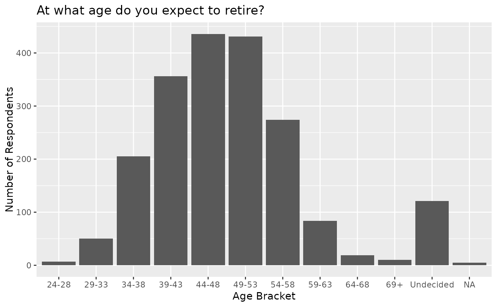
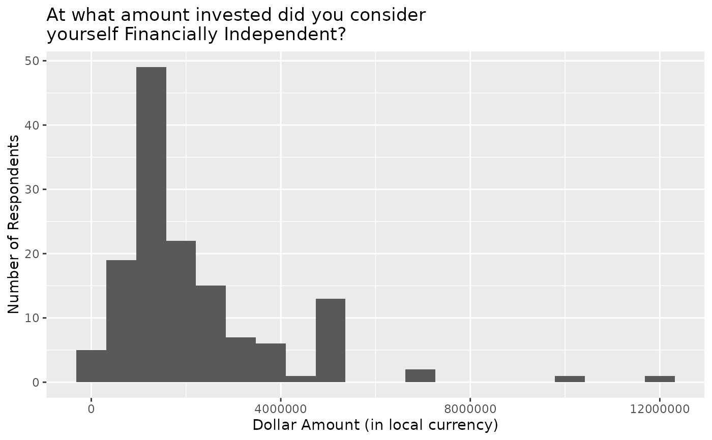

A reduced set of the official results of the 2020 FI Survey from Reddit (r/financialindependence). Only responses that represent the respondent (not other contributors in the household) are listed. Does not include retired individuals. As per instructed, respondents give dollar values in their native currency.
Format
A data frame with 1998 rows and 65 variables.
- num_incomes
How many individuals contribute to your household income?
- pan_inc_chg
As a result of the pandemic, did your earned income increase, decrease, or remain the same?
- pan_inc_chg_pct
By how much did your earned income change?
- pan_exp_chg
As a result of the pandemic, did your expenses increase, decrease, or remain the same?
- pan_exp_chg_pct
By how much did your expenses change?
- pan_fi_chg
As a result of the pandemic, did your FI (financially independent) number...
- pan_ret_date_chg
As a result of the pandemic, did your planned RE (retirement) date...
- pan_financial_impact
Overall, how would you characterize the pandemic's impact on your finances?
- political
With which political party do you most closely identify? You do not need to be registered with a party to select it, answer based on your personal views.
- race_eth
What is your race/ethnicity? Select all that apply.
- gender
What is your gender?
- age
What is your age?
- edu
What is the highest level of education you have completed?
- rel_status
What is your relationship status?
- children
Do you have children?
- country
What country are you in?
- fin_indy
Are you financially independent? Meaning you do not need to work for money, regardless of whether you work for money.
- fin_indy_num
At what amount invested will you consider yourself Financially Independent? (What is your FI number?)
- fin_indy_pct
What percent FI are you? (What percent of your FI number do you currently have?)
- retire_invst_num
At what amount invested do you intend to retire? (What is your RE number)
- tgt_sf_wthdrw_rt
What is your target safe withdrawal rate? (If your answer is 3.5%, enter it as 3.5)
- max_retire_sup
How much annual income do you expect to have from the sources you selected in question T5 at the point where you are utilizing all of them (or a majority if you do not intend to use all at the same time)? Enter your answer as a dollar amount.
- retire_exp
How much money (from your savings and other sources) do you intend to spend each year once you are retired? Enter your answer as a dollar amount.
- whn_fin_indy_num
At what amount invested did you consider yourself Financially Independent? (AKA what was your "FI number")
- fin_indy_lvl
Which of the following would you have considered yourself at the time you reached Financial Independence:
- retire_age
At what age do you intend to retire?
- stp_whn_fin_indy
Do you intend to stop working for money when you reach financial independence?
- industry
Which of the following best describes the industry in which you currently or most recently work(ed)?
- employer
Which of the following best describes your current or most recent employer?
- role
Which of the following best describes your current or most recent job role?
- ft_status
What is your current employment status? - Full Time
- pt_status
What is your current employment status? - Part Time, Regular
- gig_status
What is your current employment status? -Side Gig, Intermittent
- ne_status
What is your current employment status? -Not Employed
- edu_status
What is your current educational status?
- housing
What is your current housing situation?
- home_value
Primary residence value.
- brokerage_accts_tax
Brokerage accounts (Taxable).
- retirement_accts_tax
Retirement accounts (Tax Advantaged).
- cash
Cash / cash equivalents (Savings, Checking, C.D.s, Money Market).
- invst_accts
Dedicated Savings/Investment Accounts (Healthcare, Education).
- spec_crypto
Speculation (Crypto, P2P Lending, Gold, etc.).
- invst_prop_bus_own
investment properties / owned business(es).
- other_val
Other assets.
- student_loans
Outstanding student loans.
- mortgage
Outstanding mortgage / HELOC.
- auto_loan
Outstanding auto loans.
- credit_personal_loan
Outstanding credit cards / personal loans.
- medical_debt
Outstanding medical debt.
- invst_prop_bus_own_debt
Debt from investment properties / owned business.
- other_debt
Debt from other sources.
- 2020_gross_inc
What was your 2020 gross (pre-tax, pre-deductions) annual household income?
- 2020_housing_exp
Housing expenses(rent, mortgage, insurance, taxes, upkeep).
- 2020_utilities_exp
Utilities expenses(phone, internet, gas, electric, water, sewer).
- 2020_transp_exp
Transportation expenses(car payment, bus / subway tickets, gas, insurance, maintenance).
- 2020_necessities_exp
Necessities expenses(Groceries, Clothing, Personal Care, Household Supplies).
- 2020_lux_exp
Luxury expenses (Restaurants/Dining, Entertainment, Hobbies, Travel, Pets, Gifts).
- 2020_child_exp
Children expenses(child care, soccer team, etc.).
- 2020_debt_repay
Debt repayment (excluding mortgage/auto).
- 2020_invst_save
Investments / savings.
- 2020_charity
Charity / Tithing.
- 2020_healthcare_exp
Healthcare expenses(direct costs, co-pays, insurance you pay).
- 2020_taxes
Taxes (the sum of all taxes paid, including amounts deducted from paychecks).
- 2020_edu_exp
Education expenses.
- 2020_other_exp
Other expenses.
Source
Reddit Official 2020 FI Survey Results, https://www.reddit.com/r/financialindependence/comments/m1q8ia/official_2020_fi_survey_results.
Examples
library(ggplot2)
# Histogram of Expected Retirement Age.
ggplot(reddit_finance, aes(retire_age)) +
geom_bar(na.rm = TRUE) +
labs(
title = "At what age do you expect to retire?",
x = "Age Bracket",
y = "Number of Respondents"
)

# Histogram of Dollar Amount at Which FI was reached.
ggplot(reddit_finance, aes(whn_fin_indy_num)) +
geom_histogram(na.rm = TRUE, bins = 20) +
labs(
title = "At what amount invested did you consider\nyourself Financially Independent?",
x = "Dollar Amount (in local currency)",
y = "Number of Respondents"
)
